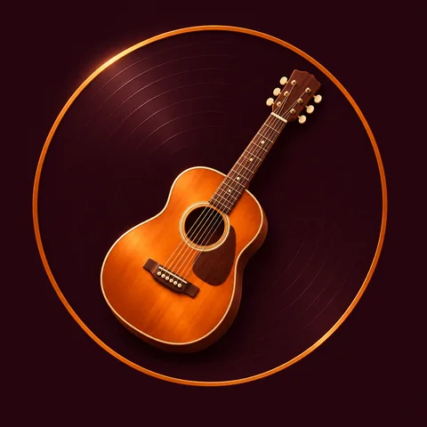
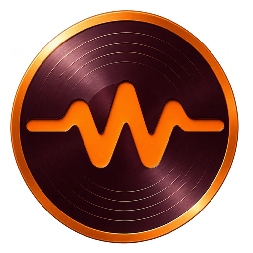
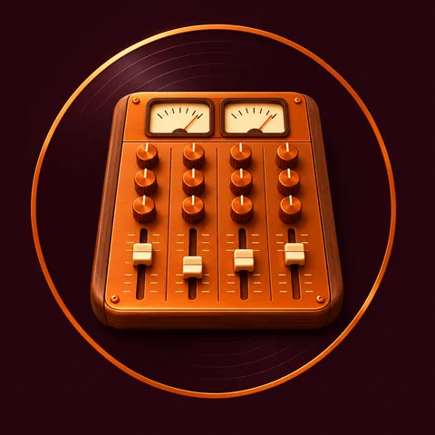
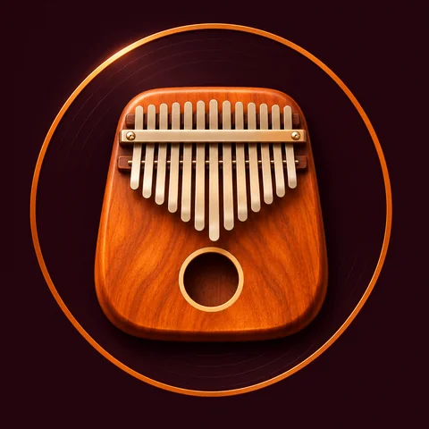
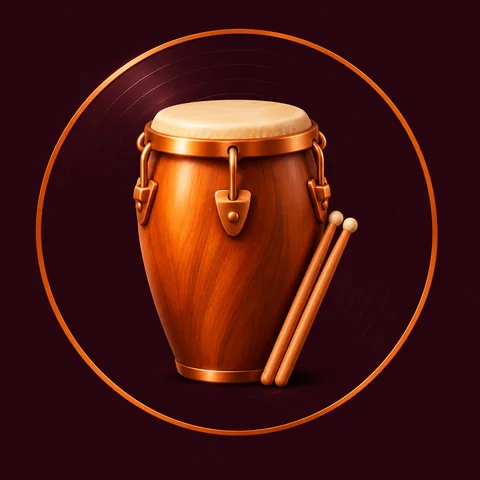
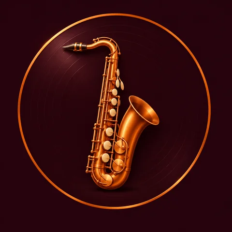
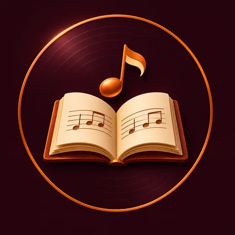
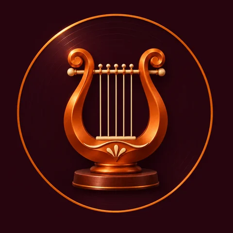
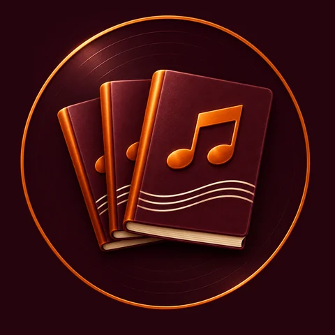

A identidade Walamort, pronta para compartilhar.
Baixe o logo Pulso e as capas para destaques. Uma identidade para explorar, aprender e criar.

Logo Pulso
Emblema transparente, avatar, tamanhos para a web e versão SVG simplificada.
Baixar kit do logo · 3.8 MBCapas para destaques
Oito imagens individuais com fundo bordô, cobre alaranjado e relevo realista. Sem texto, prontas para o recorte circular.
Baixar as oito capas · 12.6 MB

Produção musical
Baixar PNG

Kalimba
Baixar PNG

Percussão
Baixar PNG

Sopros
Baixar PNG

Academy
Baixar PNG

Museu
Baixar PNG

Métodos
Baixar PNG
Cores da marca
#FF7A1A
#210C13
#FFF0D2
Os acabamentos metálicos incluem variações de luz. Os valores de cor são a base para fundos, textos e peças complementares.
Como usar
- Mantenha as proporções do emblema e deixe espaço livre ao redor.
- Use a versão realista em tamanhos médios ou grandes; a versão plana funciona melhor em ícones pequenos.
- Centralize o círculo ao escolher a capa do destaque. Escreva o nome da categoria na rede social.
- Não estique, altere as cores nem acrescente sombras ou elementos sobre o logo.